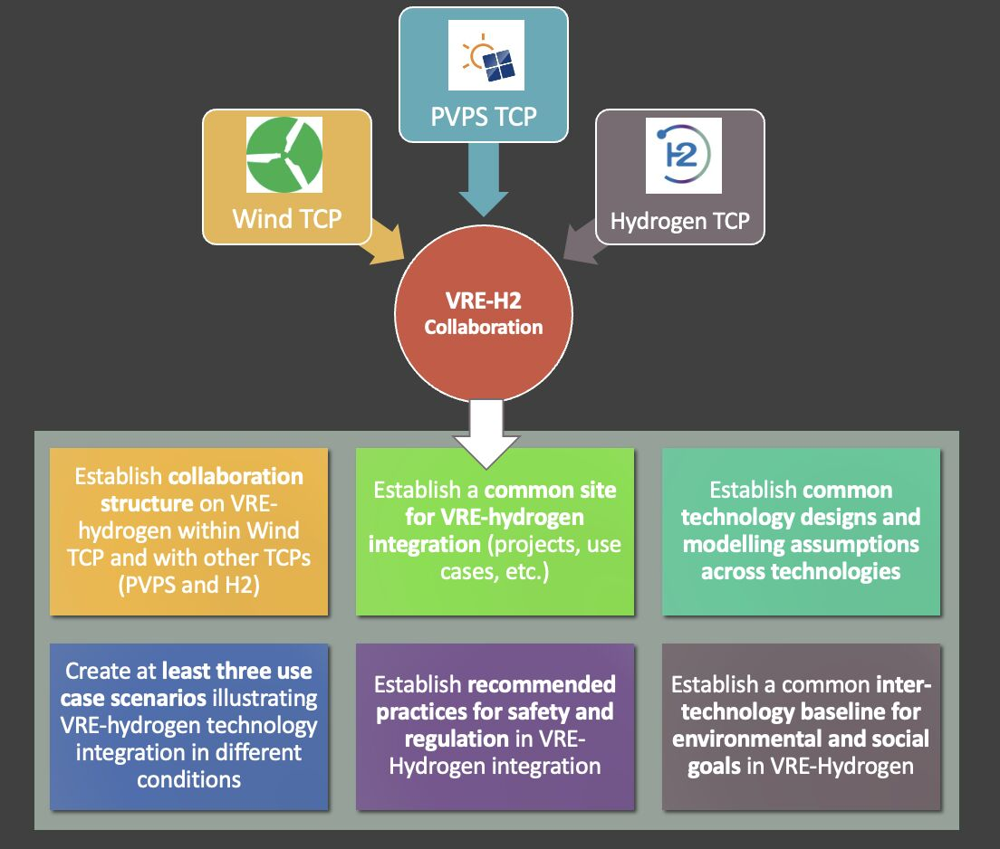

News & Updates
Follow the latest research, activities, and announcements from the IEA Wind TCP Task 61 VRE-H2 collaboration.
Follow the latest research, activities, and announcements from the IEA Wind TCP Task 61 VRE-H2 collaboration.
Task 61 brings together the IEA Wind, Photovoltaic Power Systems (PVPS), and Hydrogen Technology Collaboration Programmes to advance the integration of variable renewable energy and hydrogen.
The collaboration develops shared use cases, technology designs, and recommended practices for VRE-hydrogen plants.

Updates will be shared here.
For current announcements and videos, follow Task 61 on its official channels.